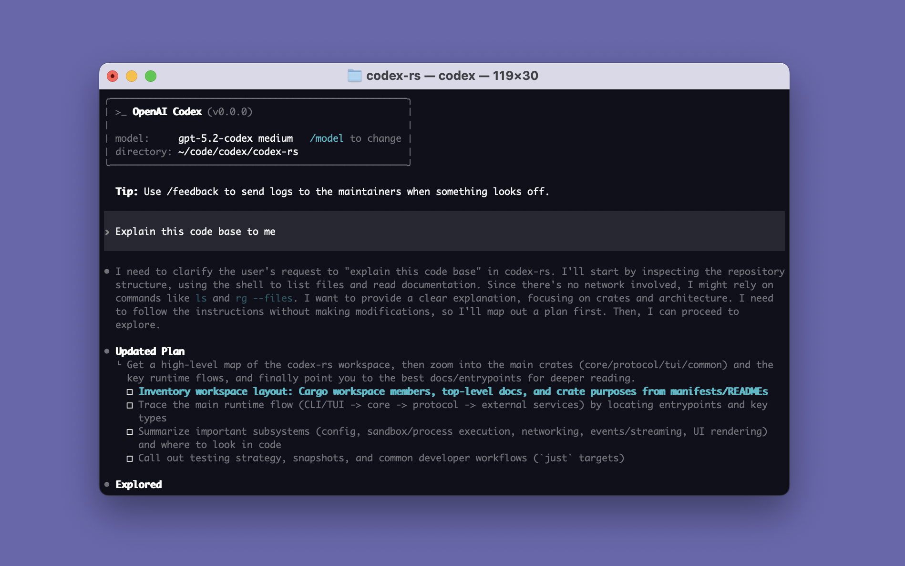

Codex CLI: OpenAI's Terminal Coding Agent, Past 117K Stars
openai/codex is a lightweight coding agent that runs locally in your terminal — and it's now one of the most-starred repos on GitHub at over 117K stars. Written in Rust, it reads your codebase, proposes edits, runs commands with your approval, and iterates until the task is done. Unlike the cloud Codex Web agent, everything executes on your machine against your working tree, which is exactly what you want for "fix this failing test in this repo right now."

The family has grown beyond the CLI: there's an IDE extension (VS Code, Cursor, Windsurf), a desktop app (codex app), and Codex Web at chatgpt.com/codex. But the terminal version is still the fastest way in and the one most people live in.
Why you'd actually use it
- Kill a flaky test loop. Point it at a red CI job: "make
test_checkout_flowpass without weakening assertions." It reproduces locally, edits, re-runs, and shows you the diff. - Big refactors with review gates. Rename an API across 40 files. In approval mode you review each proposed command before it runs, so you keep control while it grinds through the mechanical parts.
- Codebase archaeology. Ask it where auth tokens are validated and why. It greps, reads, and answers from your actual code — no copy-pasting files into a chat window.
- Scaffolding inside an existing repo. "Add a /health endpoint following the pattern in routes/users.py." It matches your conventions instead of generating framework-tutorial code.
- Vim-mode workflow. Recent commits added dot-repeat to Vim mode, so keyboard-driven editing inside the TUI keeps getting more real.
Getting started
- Install on Mac or Linux:
curl -fsSL https://chatgpt.com/codex/install.sh | sh - Or on Windows (PowerShell):
powershell -ExecutionPolicy ByPass -c "irm https://chatgpt.com/codex/install.ps1 | iex" - Prefer a package manager? Both work:
# Install using npm npm install -g @openai/codex # Install using Homebrew brew install --cask codex - If downloads from
releases.openai.comare blocked on your network, force GitHub Releases as the source:curl -fsSL https://chatgpt.com/codex/install.sh | CODEX_INSTALLER_USE_RELEASES_OPENAI_COM=false sh # PowerShell equivalent $env:CODEX_INSTALLER_USE_RELEASES_OPENAI_COM='false'; irm https://chatgpt.com/codex/install.ps1 | iex - Launch it in your project directory and authenticate when prompted:
cd my-project codex - Describe a task in plain English. Approve or reject its proposed commands and edits as it works. For editor integration instead, install the IDE extension; for a GUI, run
codex app.
Code & config samples
Typical invocation patterns once you're inside the TUI:
# inside codex, natural-language tasks:
> fix the failing test in tests/test_payments.py and explain the root cause
> refactor all REST endpoints to use the new auth dependency
> write a migration adding soft-delete to the orders tableCommon CLI flags:
# resume the most recent session
codex resume
# non-interactive: run one task and exit
codex exec "update dependencies in pyproject.toml"What's new
Development is extremely active — the latest release is rust-v0.149.1 (August 24, 2026), and commits landed the very next day. Notable recent changes from the commit log:
- "Route extension hints into context-window metadata" (#40533) — better context-window accounting.
- "Represent terminal input in approval reviews" (#40528) — approval prompts now show what would be typed into terminals, not just commands.
- "Retry provider auth commands after initial failures" (#40523) — fewer dead sessions when auth hiccups at startup.
- "Add hooks for interrupted turns" (#40511) and "Add persisted thread artifact models" (#40509) — groundwork for resumable, persistent agent threads.
Troubleshooting
- Desktop app freezes/stutters on Windows 11 despite good hardware — a widely-reported bug (#20214, 100+ comments). Workaround: use the CLI instead of
codex app; check the issue for version-specific fixes before reinstalling. - macOS app triggers runaway
syspolicyd/trustdCPU usage — tracked in #25719; the security-scanning daemons churn on repeatedly-verified binaries. Quitting and relaunching the app temporarily relieves it; watch the issue for a shipped fix. - Codex answers an earlier message instead of your latest one — a known context-handling bug (#8648). Starting a new session clears the stale conversational state; keeping tasks scoped per-session avoids it.
- Prompts auto-resolve after ~60 seconds while you're reading — reported in #28969. There's currently no setting to disable the auto-resolve (per the issue); respond promptly or run in a mode where approvals wait.
- Want longer context than you're getting — 1M-token context for GPT-5.5 is the single most-requested enhancement (#19464, 130+ comments). Until it lands, break large tasks into smaller scopes rather than fighting the window.